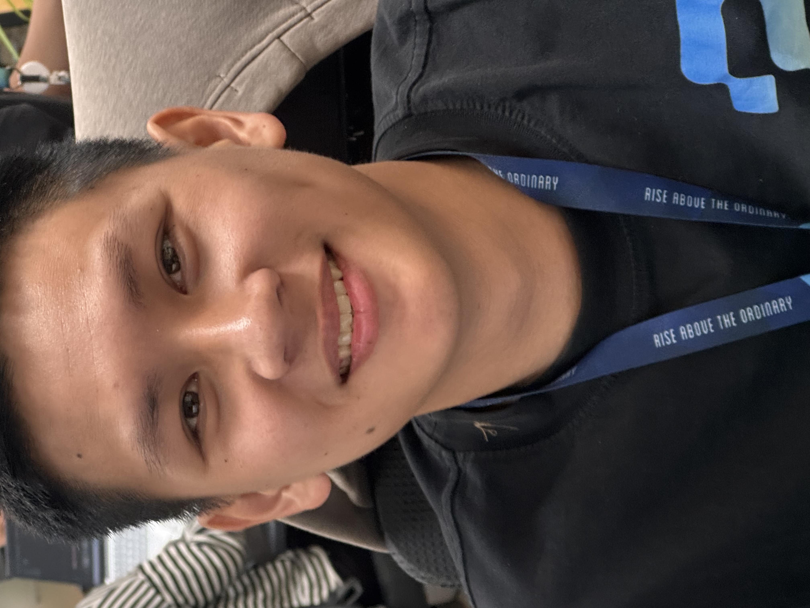

Hoàng Phát
Junior SEO / SEO Executive
Junior SEO với hơn 2 năm kinh nghiệm thực chiến cho website du lịch. Mạnh về On-page, Off-page, Page Speed và triển khai nội dung theo hướng dữ liệu. Có thể thiết kế, chỉnh sửa website WordPress cơ bản phục vụ SEO và tư vấn tăng trưởng organic.

Kinh nghiệm
Junior SEO - Phụ trách SEO 2 website du lịch
- Phụ trách SEO chính cho dulichquynhon.blog và vungtau.travel.
- Nghiên cứu và lên kế hoạch từ khóa, triển khai content chuẩn SEO, tối ưu On-page, Page Speed và internal link.
- Thiết kế/chỉnh sửa website WordPress cơ bản để cải thiện trải nghiệm, cấu trúc trang và khả năng chuyển đổi.
- Triển khai Off-page: liên hệ đối tác backlink, social, blog 2.0 và theo dõi chất lượng nguồn link.
- Theo dõi hiệu suất bằng Google Analytics 4, Google Search Console và các công cụ SEO.
dulichquynhon.blog & vungtau.travel - xây nền SEO từ gần như bằng 0
- Xây cấu trúc chuyên mục du lịch, địa điểm, ẩm thực, dịch vụ, khách sạn, tour và cẩm nang cho 2 website.
- Thiết lập theo dõi dữ liệu sớm bằng GA4/GSC để xác định nhóm trang kéo traffic tự nhiên.
- Từng bước đưa nhiều từ khóa focus lên top, tạo tăng trưởng organic rõ rệt sau vài tháng.
Dự án tiêu biểu
Du Lịch Quy Nhơn - SEO tổng thể website du lịch
- Lên kế hoạch từ khóa, triển khai content chuẩn SEO, tối ưu heading, meta, internal link.
- Cải thiện Page Speed và triển khai backlink, social, blog 2.0.
- Traffic tự nhiên tăng trưởng mạnh trong 12 tháng.
Vũng Tàu Travel - SEO cho website mới
- Xây cấu trúc nội dung địa điểm, ẩm thực, dịch vụ, tour và khách sạn.
- Thiết lập GA4/GSC, theo dõi index, internal link, intent và từ khóa focus.
Giá trị kinh doanh & Tool AI
- Tích hợp đặt tour và vé qua Klook affiliate trên website du lịch, tạo thêm nguồn doanh thu ngoài traffic.
- Thiết kế/chỉnh sửa các trang WordPress cơ bản để hỗ trợ SEO, trải nghiệm người dùng và form liên hệ tư vấn.
- Tự xây quy trình/tool lập plan công việc SEO tuần/tháng với AI Agent và Excel để tăng hiệu suất báo cáo.
Mục tiêu nghề nghiệp
Tìm cơ hội Junior SEO / SEO Executive để tiếp tục phát triển năng lực SEO thực chiến, tập trung vào tăng trưởng organic bền vững, đo lường rõ ràng và đóng góp trực tiếp cho hiệu quả kinh doanh của website.
Liên hệ tư vấn SEO & website WordPress cơ bản
Nhận trao đổi định hướng SEO, audit On-page/Page Speed, lập kế hoạch nội dung và thiết kế/chỉnh sửa website WordPress cơ bản. Liên hệ: 0939 813 645 · tinhnghich17@gmail.com